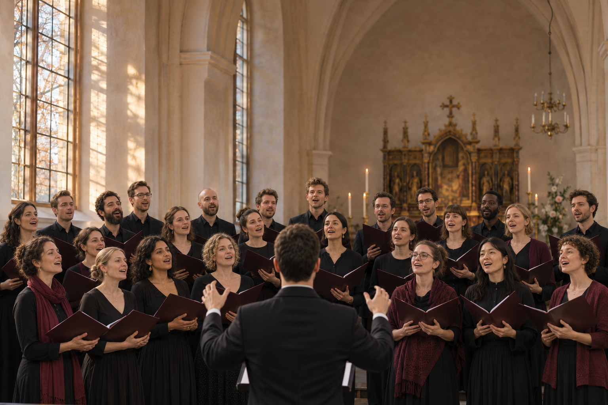

Tillfällig AI-genererad exempelbildAktuellt · Nästa konsert
Vi ses i musiken.
Här hittar du snart vår nästa konsert.
Datum, plats och program kommer när konserten är bokad.
Konsertinformation
Ingen konsert är inlagd i den här preliminära versionen ännu.
Här kan vi senare visa program, tider, vägbeskrivning och en länk till biljetter.
Människorna bakom musiken
Om oss
Många röster.
En gemensam klang.
Välkommen till Sofia Kammarkör. Här kommer du att kunna läsa om kören, vår musik och människorna som skapar den.
Texten är ett förslag. Vi fyller på med er egen presentation, information om dirigenten och det ni vill berätta.
Hör av dig
Kontakt
Vill du komma i kontakt med oss?
För frågor om kören, konserter eller ett framtida samarbete.
Körens e-postadress läggs in här.